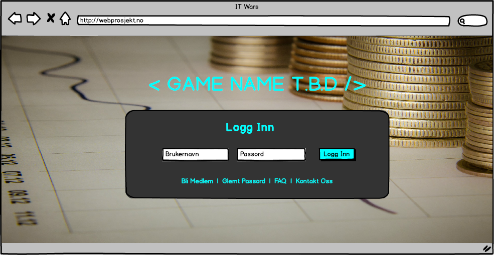

The Obscene Jellyfishes
Prosjektplan
| Navn | Studentnr | Grupperolle | Ansvar |
| Rudi Yu Haugan | s231776 | Gruppeleder | Back-end, PHP, AJAX, JS |
| Thomas Kristiansen | s236321 | Gruppemedlem | Back-end, PHP, AJAX, JS |
| Audun Brustad | s236341 | Gruppemedlem | HTML, JS, CSS |
| Olav Elnan | s236370 | Gruppemedlem | HTML, JS, CSS |
Idé
Ideen vår er et tekstbasert rollespill der brukeren starter som en utvikler. Ideen er at brukeren gjør "jobber" som gir erfaringspoeng og penger. Når brukeren får mer og mer erfaringspoeng så vil nye jobber åpne seg. Disse nye jobbene gir mer erfaringspoeng og mer penger. Etterhvert vil mer avanserte "jobber" åpne seg, som f.eks. gruppejobber. Ideen er inspirert av Nordicmafia. Grunnen til at vi valgte dette var at vi ville lage en dynamisk og moderne side med flere teknologier som samtidig viser vårt mestringsnivå.
User-cases
Brukeren skal kunne gjøre følgende ting på siden vår. Flere user-cases kan forekomme, avhengig av hvor lang tid vi bruker på å lage siden.
- Authentication
- Login
- Logout
- Registrering
- Reset passord
- Jobber
- Jobber
- Gruppe-jobber
- Profil
- Redigere profil
Arbeidsmetoder
MVC
For PHP har vi valgt å prøve oss på å bruke MVC-designmønstret. Dette gjør det mye lettere å implementere nye funksjoner og implementasjon av AJAX. MVC er også sentralt i programmering og gruppen føler det viktig å lære MVC og basic designmønstre. MVC gjør også at vi kan programmere moduler istede for en side med masse spaggethi-kode.

Agile Programming
Vi kommer til å jobbe med smidig programmering. Fordi ideen vår er noe vi selv har lyst å bruke, kan vi utvikle løsningen veldig smidig. Hvis vi ikke liker noe så kan vi forandre på det hvis gruppen kommer til konsensus.
Pair programming
Vi kommer til å jobbe alene men også pair programming.
Wireframes


Milepælsplan og arbeidsplan
Vi har en måned på oss til å gjøre oppgaven. Gruppen har blitt enig om å bruke 10+ timer i uken hver. Vi deler måneden i 4 "deler". I hver del har vi oppgaver som skal gjøres. Når en del er ferdig, møtes gruppen og evaluerer arbeidet.
Del 1 av 4
Oppgaver
- Utforske hvordan vi kan bruke teknologiene vi har valgt til å lage en løsning.
- Utforske MVC og implementere et basis for hjemmesiden
Del 2 av 4
Oppgaver
- Få laget login-modul
- Utvikle CSS for nettsiden
Del 3 av 4
Oppgaver
- Utvikle spillmoduler
- Utvikle Javascript for "forms" og annet
- Implementering av AJAX
Del 4 av 4
Oppgaver
- Finpussing av JavaScript, AJAX og HTML
- Fullføring av prosjektet
Milepæler
- MVC basis
- CSS for navigasjon
- Inplementering av AJAX
- JavaScript for forms
- Spillmoduler
- All Javascript
- All CSS
Teknologier brukt
HTML:
Vi bruker HTML for å strukturere informasjon, tekst, overskrifter, avsnitt og lister. HTML er også et krav.
CSS:
Vi bruker CSS pga de mange mulighetene det tilbyr for å designe en webside. CSS er det vi primært bruker når vi former nettsiden vår. CSS er også et krav.
JavaScript:
Vi bruker JavaScript fordi det er en fin måte å gjøre siden mer interaktiv og moderne på. JavaScript er også et krav.
AJAX
AJAX gjør siden veldig dynamisk og helhetlig, fordi vi kan oppdatere deler av siden. Dette vil også vise en mestring av JavaScript, siden JavaScript er sentralt i AJAX.
PHP
Vi bruker PHP fordi det gir oss flere muligheter til å gjøre nettsiden vår dynamisk. PHP kan også brukes til å snakke med databaser, noe som gjør at vi kan bruke en database i prosjektet.
MySQL
Vi bruker MySQL som database fordi dette er en av de mest brukte databasene og fordi vi i teorien skal ha tilgang til dette på skolen. Det at vi har valgt å ha en database i oppgaven, åpner for mange flere muligheter med tanke på lagring av data. Eksempler på dette er: brukerens penger, erfaringspoeng og profibilde. Da kan vi også opprette et pålogginssystem som er helt nødvendig for at ideen vår skal funke. Ellers er en database generelt greit med tanke på lagring av all slags data.
GitHub
Vi har valgt å bruke GitHub i dette prosjektet. Dette har vi gjort fordi GitHub gjør det veldig lett for oss å sammarbeide på nettsiden. GitHub gir oss også en historikk av forandringer som er gjort i prosjektet. En annen grunn til at vi har valgt å bruke GitHub er at vi kommer til å ha mye bruk for dette i senere tid, og vi føler da at det er greit å begynne å bruke og lære det allerede nå.